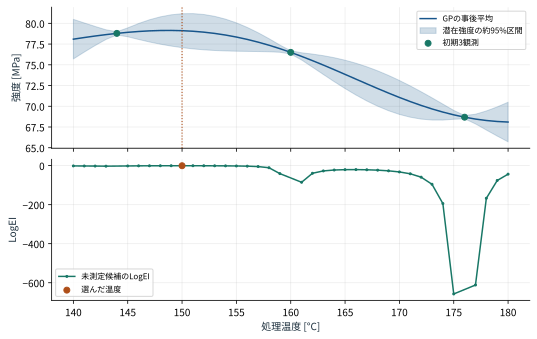
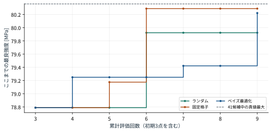

第1章 ベイズ最適化とは何か
学習目標 限られた予算のもとで次に試す温度を提案し、格子・ランダム探索と比べる。
新しい材料の強度を高めるために、処理温度を変えて試片を作るとします。試片の準備から測定までに時間がかかり、試せる温度は数点です。この章では、まずPythonで次の測定点を一つ選び、その後で選び方と評価予算の関係を考えます。Pythonで配列と関数を使ったことがあれば読み始められます。
1.1 高価な試験で、次にどの温度を選ぶか
仮想の材料試験で、処理温度 \(T\) は 140〜180 °C の範囲から1 °C刻みで選べます。強度はメガパスカル（MPa）で測ります。温度の数値を °C で表すとき、計算では \(x=(T-140)/40\) に変換します。この式で、140 °Cは \(x=0\)、180 °Cは \(x=1\) です。変換しても温度の順序と候補数は同じです。
最初に 144、160、176 °C の3点を測りました。あと6点を測れます。高い強度が得られた温度の近くを測れば、さらに強い条件が見つかるかもしれません。離れた未測定の温度にも、見落とした山があるかもしれません。今回の問いは、これまでの3件を使って、次の試験をどこで行うかです。
1.2 Pythonで最初の候補を得る
第1章のNotebookで同じ計算を実行できます。まず初期点の強度を合成試験で取得し、ガウス過程（GP）に渡します。GPは未測定の温度でも、強度の予測値とその不確かさを与えるモデルです。
import torch
from botorch.acquisition.analytic import LogExpectedImprovement
from botorch.optim import optimize_acqf_discrete
from experiment import (
DTYPE, fit_material_gp, material_strength, setup,
)
setup()
pool = torch.linspace(0, 1, 41, dtype=DTYPE).unsqueeze(-1)
initial = torch.tensor([4, 20, 36])
train_x = pool[initial]
train_y = material_strength(train_x)
available = torch.ones(len(pool), dtype=torch.bool)
available[initial] = Falsepool は41行1列です。1行が1つの温度で、1列が入力の種類を表します。material_strength が一回の試験を代替します。続くコードでは、既測定の点を除いた候補にスコアを付け、一番高い点を選びます。LogExpectedImprovement は、現在の最良値をどれだけ更新できそうかという基準に基づくスコアです。式は第5章で扱います。
train_yvar = torch.full_like(train_y, 0.01)
model = fit_material_gp(train_x, train_y, train_yvar)
acquisition = LogExpectedImprovement(model, best_f=train_y.max())
candidate, _ = optimize_acqf_discrete(
acquisition, q=1, choices=pool[available],
)
observed = material_strength(candidate)
print(140 + 40 * candidate.item(), observed.item())この合成試験は、温度を固定すると同じ強度を返します。GP側では安定に学習するために小さな分散 \(0.01\,\mathrm{MPa}^2\) を観測モデルに指定しています。実際の測定誤差がある場合の扱いは第2章と第4章で説明します。q=1 は選ぶ候補が1点であることを表します。
この実行で最初に選んだのは 150 °C です。この温度での実行結果は 79.25 MPa でした。

まず下段の橙色の丸を見つけ、上段で同じ温度を読みます。上段の青線は強度の予測の中心、帯は予測の不確かさの大きさを示します。下段で選んだ温度を実測すると、得られた強度を学習データに追加できます。次回はその情報を使うため、スコアの曲線も変わります。
1.3 ブラックボックス最適化と評価回数
温度ごとの潜在強度を \(f(x)\)、実験できる温度の集合を \(\mathcal X\) とすると、目標は
\[ x^\star\in\mathop{\mathrm{arg\,max}}_{x\in\mathcal X} f(x) \tag{1.1}\]
です。\(\mathrm{arg\,max}\) は、値が最大になる入力の集合を表します。最高値が同じ場所が複数あるなら、そのいずれも候補です。実験が終わった時点で、観測した試料と、次の実運用に使う温度の推薦も区別します。実試験に測定ノイズがあると、偶然大きく出た観測がそのまま真に最良の条件とは限りません。
入力を指定して初めて応答が分かり、その応答の式や勾配を普段は直接使えないとき、応答をブラックボックスとして扱います。本を読む際には合成関数の実装を確認できますが、アルゴリズムは測定した点の値だけで候補を決めます。候補スコアを41点で計算しても、実際に選んで強度を取得するのは1点です。比較の予算には強度を取得した回数を数えます (Frazier 2018年; Garnett 2023年)。
1.4 代理モデル、獲得関数、探索と活用
高価な実験の応答を近似する予測モデルを代理モデル（サロゲートモデル）と呼びます。予測の中心が高い温度を選ぶことは、現在得られた情報を活用する考え方です。観測が少なく予測の幅が広い温度を調べることは、未知の領域を探索する考え方です。ベイズ最適化では、どこを測る価値が高いかを獲得関数で数値化します。測定を終えた時点でどの温度を使うかは、測定候補を選ぶ判断とは別に行います (Garnett 2023年)。
- 観測済みの入力と強度から、代理モデルを学習します。
- 各候補を測る価値を獲得関数で計算します。
- 実行可能な候補のうち、獲得関数が大きい温度を選びます。
- その点を1回測り、新しい観測を追加します。評価予算が残っていれば学習から繰り返します。
この章の実行例では、一入力・一目的の最大化を扱います。第7・10章では二入力、第11章では複数の目的に広げます。観測や測定範囲の制約、複数点を一度に試す場合は、候補の選び方や予算の数え方を調整します。
1.5 同じ予算でランダム・格子・BOを比べる
三つの方法に同じ初期3点、同じ41候補、同じ追加6点の予算を与えます。追加点の選び方だけを変えます。格子の追加点は 140、148、…、180 °C の6点を温度の昇順で評価します。ランダムは未測定の候補から重複なく引きます。BOは直前までの測定でモデルを更新してから、次の点を選びます。

この例では試験にノイズがないので、予算内に観測した最良値を全候補の最大と直接比較できます。最大から最良値を引いた差が小さいほど、予算内に良い条件まで到達したことを示します。
| 方法 | 累計評価回数 | 最良観測値 [MPa] | 温度 [°C] | 最大値との差 [MPa] |
|---|---|---|---|---|
| ランダム | 9 | 79.92 | 157 | 0.44 |
| 固定格子 | 9 | 80.29 | 156 | 0.07 |
| ベイズ最適化 | 9 | 80.22 | 154 | 0.14 |
全41候補の最大は 80.36 MPa です。この実行で最良観測値が最も高かった方法は 固定格子 です。
固定格子は温度範囲を均一に調べやすく、格子が粗い場合はその間にある強い点を拾えません。ランダムは同じ予算でもシードで結果が変わります。BOは測った値を次回に利用しますが、代理モデル・獲得関数の仮定や最初の3点が結果に影響します。図の差はこの合成関数・初期点・ランダムシード・格子の順番での例です。手法の性能を比べるときは、複数の問題と初期点、シードについて予算と評価方法を揃えて検討します。実機では測定コストのほか、候補計算にかかる時間も記録します。
1.6 章末演習とまとめ
試行が安価で候補を網羅できるときには、全候補を調べれば最大値を直接確認できます。測定の条件変更や試片の準備に時間がかかるとき、少数の試験から予測を更新する価値が高くなります。探索範囲、測定回数、測定のばらつき、最後に推薦する条件を先に整理しておくと、比較の基準が明確になります。
- 確認。 初期3点、追加6点の試験で評価予算はいくつですか。候補を41点から細かくしたとき、物理的な試験回数もそのまま増えますか。
- 操作。 Notebookの
n_extraを3に変え、6回目までの推移を比較しましょう。次にランダムのシードを変え、結果がどう動くか確かめましょう。 - 発展。 同じ温度を何度か測ると強度がばらつく場合、最良観測値をどう読みますか。最良条件を推薦する前に追加で行う測定を説明しましょう。
次章へ。 図の青い帯を読むには、予測を数値一つで表す場合と、分布で表す場合の違いが重要です。第2章では、観測を得ると分布がどう変わるかを、一つの未知量から学びます。